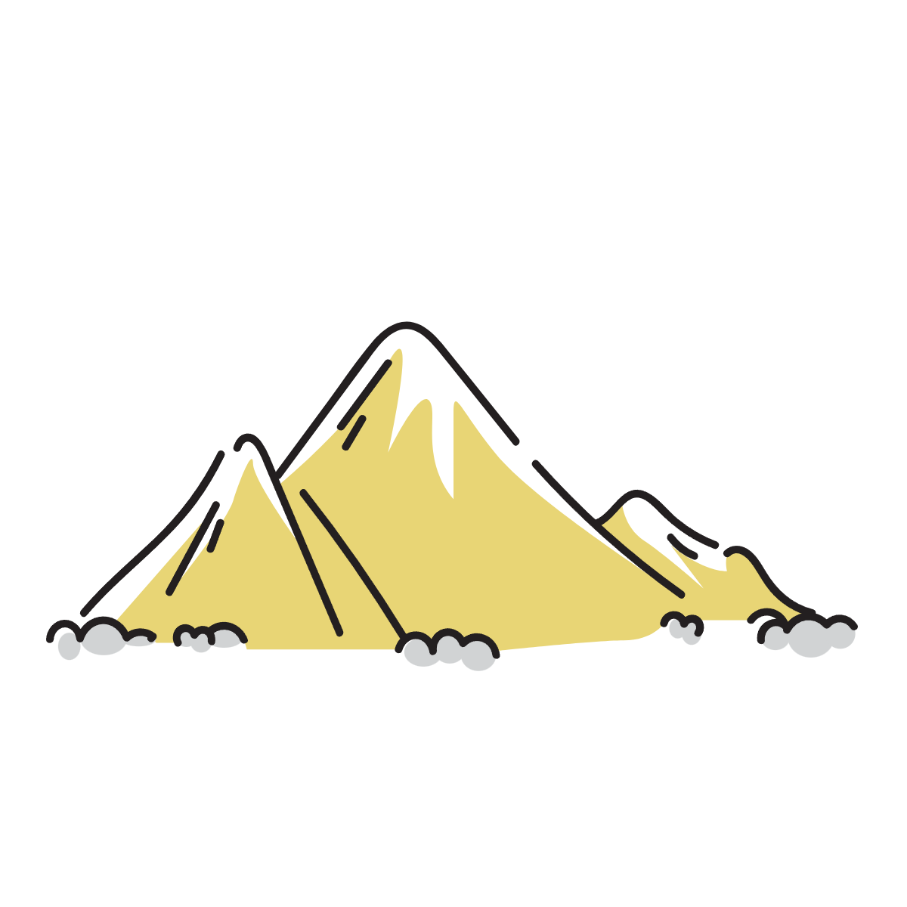
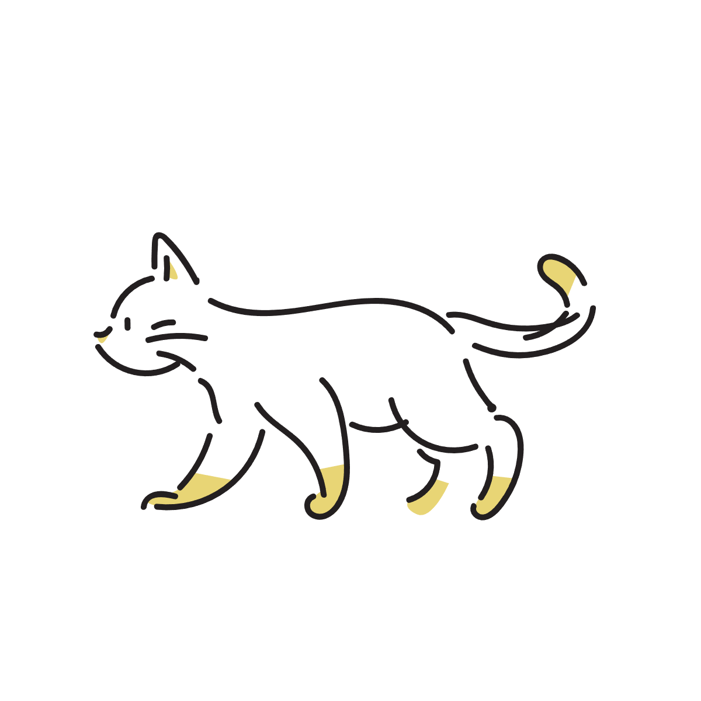

散歩をすると、なぜアイデアが生まれやすいのか？
考えごとをしている時、机の前では何も浮かばなかったのに、気分転換に散歩をすると急にアイデアが出てくることがあります。
無関係と思っていたもの同士のつながりが見えたり、全く考えもしなかった分野との関係に気づいたり、創造力が高くなったような感覚を覚えることがあります。
このような感覚は昔から多くの人によって語られてきたことではありますが、それがどういうメカニズムで起こっているのかという説明は、 まだ完全に確立しているとはいいがたい状況にあります。
そもそも人間の発想と散歩は本当に関係があるのでしょうか？
関係があるとしたら、散歩をしている私たちの脳内では一体どういうことが起こり、発想力の活性化につながっているのでしょうか。
歩くことで創造性が高まることは実際に確認されている
実は2014年に発表されたある研究では、歩くと創造性が上がることが実際に確認されています。
その研究で行われた実験では、たとえば、一つの物からどれだけ多くの用途を思いつけるか、といった課題がありました。
それは「一つの考えから、どれだけ別の可能性を広げられるか」という発想の広げやすさや柔軟性を見るためのものでした。
実験の結果としては、屋外屋内を問わず、歩くことで創造性のテストの結果が有意に向上したということです。
さらに、創造性とは別の「収束的思考」と呼ばれる「唯一の正解を見つける」タイプの思考については、この実験での向上は見られなかったことも明らかになっています。
この結果により歩くことは、特に発想を広げたり連想を柔軟にするという点において、創造性の向上につながっているということがいえます。
なぜ人間は「歩くと発想が変わる脳」を持っているのか
ただ、ここで新しい疑問が出てきます。
なぜ人間の脳は、歩くことで創造力が高まるような性質を持っているのでしょうか。
この疑問を解き明かすためには、はるか昔、先史時代の人間の営みに目を向ける必要があるかもしれません。
創造性の源流はどこにあるのか
2024年に発表された別の研究では、この点についてかなり興味深い仮説が立てられています。
この論文では、人間の創造性はもともと「空間を探索する能力」から発展したのでは？という理論を提示し検証しています。
ここでいう探索とは、食べ物を探すとか、ある空間の中を探索するとか、目的地を見つけるといった古くからの生活に深く関わる探索行動を意味します。

この研究で行われた実験では、まず「思考における創造性」を、アイデアを広げる「発散的思考」と、答えを絞り込む「収束的思考」の二つに分類しています。
その上で参加者を二つのグループに分け、片方には地図上のバラバラの場所を探す「広範囲探索」を行わせ、 もう片方には地図の同じ場所を繰り返し探す「収束型探索」を行わせました。
そのあとで両グループに発散的創造性テストと収束的創造性テストの二つを実施したところ、 広範囲探索を行ったグループは発散的創造性テストの結果がよく、収束型探索を行ったグループは収束的創造性テストの結果がよいことがわかりました。
前の研究と合わせて考えると、「歩くこと」と「広範囲を探索すること」は発散的創造性と対応しており、そこから 「新しいアイデアを探すこと」と「新しい場所を探すこと」が、脳内では完全に別々ではない可能性を示唆しています。
| 行動 | 対応していた思考 | 研究が示唆すること |
|---|---|---|
| 歩く | 発散的思考 |
脳内で同じ探索処理を 使っている可能性 |
| 広範囲を探索する |
従来創造性は「特殊な才能」と捉えられがちでした。
しかしこの論文は「創造性は古い空間探索システムを再利用しているだけかもしれない」という進化論的な見方を強く示唆しており、 創造性の源流を探るための重要な手掛かりになるかもしれません。
創造性はどこから生まれたのか
ここで最初の疑問に戻ります。
「散歩をすると、なぜアイデアが生まれやすいのか？」
もちろん現時点では、その仕組みが完全に解明されているわけではありません。
ただ近年では、「新しい場所を探索すること」と「新しいアイデアを探索すること」が、脳内で部分的に共通した仕組みを利用している可能性が研究され始めています。
そして散歩中に発想が広がりやすくなる理由も、この「探索する脳」と関係しているのではないかと考えることができます。
散歩をしている時、人間は単に足を動かしているわけではありません。
視界の変化に注意を向け、見慣れた道の小さな違いに気づき、次に何が現れるかを無意識に予測しながら歩いています。
つまり脳は、歩行中ずっと「探索」を続けています。
これは、人類が長い時間をかけて繰り返してきた、「未知の場所を歩き回りながら環境を探索する状態」とよく似ています。
もし創造性の一部が、もともとこうした探索行動の延長として発達してきたのだとしたら、散歩中に連想が広がりやすくなることも自然に説明できます。
新しい場所を探す時、人間の脳は「次に何があるか」を予測しながら、今持っている知識を柔軟に組み合わせ続けます。
そして創造的な発想もまた、「まだ結びついていないもの同士の関係」を探し、新しい可能性を見つける行為だと考えることができます。
もちろん、これは現時点では一つの研究仮説に基づいた解釈です。
しかし少なくとも、散歩中にアイデアが生まれやすいのは、単なる気分転換だけではなく、人間の創造性そのものが「探索する脳」の延長にあるからだ、という見方には一定の説得力があります。

参考情報
- Stanford University - Want creative thinking? Go for a walk
- Psychological Science - Creativity as Cognitive Foraging
本記事は現在提案されている研究仮説をもとに構成しています。
関連アイテム
関連アイテムを今後ここに追加する予定です。